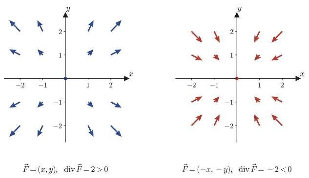
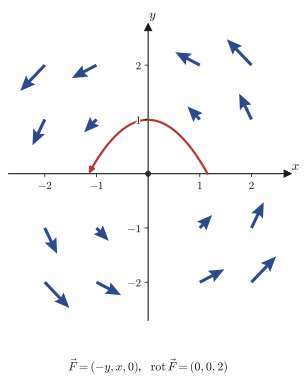

第19章発散と回転
前章では，スカラー場 $f$ に勾配（gradient）という操作を施すと $\grad f=\nabla f$ というベクトル場が生まれること，そしてそれが「$f$ が最も急に増える方向」を指すベクトルであることを学んだ．勾配は「スカラー場からベクトル場を作る」操作である．本章では逆に，ベクトル場からスカラー場やベクトル場を作る2つの新しい操作を導入する．ひとつは発散（divergence），もうひとつは回転（rotation，あるいは curl）である．どちらも $\nabla$（ナブラ，nabla）という同じ記号を使って表され，$\nabla$ とベクトル場 $\vec f$ の「内積のようなもの」が発散，「外積のようなもの」が回転である．
発散は「その点にどれだけ湧き出し（source）や吸い込み（sink）があるか」を測る量であり，回転は「その点にどれだけ渦（vortex）があるか」を測る量である．たとえば蛇口から水が湧き出す場所ではその点の発散が正になり，台風の目のまわりのように風がぐるぐる回っているところでは回転が大きくなる．この2つの操作と勾配を合わせた $\grad,\ \operatorname{div},\ \rot$ の3点セットは，電磁気学のマクスウェル方程式，流体力学の連続の式，そして材料科学で頻出する熱伝導方程式や拡散方程式のすべてに直接登場する，ベクトル解析の中心的な道具である．さらに発散と勾配を組み合わせるとラプラシアン（Laplacian）という2階の微分演算子が現れ，これは熱伝導方程式 $\partial u/\partial t=k\Delta u$ や波動方程式の空間部分を支配する，物理学で最も頻繁に登場する演算子のひとつである．本章を終えるころには，これら3つの演算子の間に成り立つ2つの著しい恒等式 $\operatorname{div}(\rot\vec f)=0$（回転には発散が無い）と $\rot(\grad\varphi)=0$（勾配には回転が無い）を，自分の手で導けるようになっているはずである．
- 発散 $\operatorname{div}\vec f=\nabla\cdot\vec f$ の定義（平面・空間）と，より厳密な「単位体積あたりの流出量の極限」による定義
- 発散の線形性 $\operatorname{div}(C_1\vec f_1+C_2\vec f_2)=C_1\operatorname{div}\vec f_1+C_2\operatorname{div}\vec f_2$ と積の公式 $\operatorname{div}(\varphi\vec f)=(\nabla\varphi)\cdot\vec f+\varphi(\nabla\cdot\vec f)$ の完全な導出
- 放射状のベクトル場 $\vec p$，$\abs{\vec p}^n\vec p$ の発散を平面・空間の両方で計算する
- 微小な正方形を水が出入りする様子から，発散が「単位面積・単位体積あたりの正味の流出量」であることを式で導く（発散の物理的な意味）
- ラプラシアン $\Delta=\nabla\cdot\nabla=\nabla^2$ を「勾配の発散」として導入し，ラプラスの方程式 $\Delta f=0$ と調和関数，$\grad(\operatorname{div}\vec f)$ はラプラシアンではないという注意点
- 回転 $\rot\vec f=\nabla\times\vec f$ の定義と，外積の成分を求める「たすき掛け」の記憶術
- 回転の線形性と積の公式 $\rot(\varphi\vec f)=(\nabla\varphi)\times\vec f+\varphi\rot\vec f$
- 4つの恒等式 $\rot\vec P=\vec 0$，$\rot(\abs{\vec P}^n\vec P)=\vec 0$，$\operatorname{div}(\rot\vec f)=0$，$\rot(\grad\varphi)=\vec 0$ の導出と，回転の物理的な意味（渦の強さ）
もとにしたノート：望月泰英『数学ノート ベクトル解析』 pp. 33–40．
19.1 発散（divergence）の定義と基本公式
前章では，ナブラ $\nabla$ を成分表示すると空間の場合 $\nabla=\left[\pdiff{}{x},\ \pdiff{}{y},\ \pdiff{}{z}\right]$ という「偏微分を成分に持つベクトルもどき」であり，これをスカラー場 $f$ に「掛ける」と勾配 $\grad f=\nabla f$ になるのだった．ベクトルには内積（dot product，$\cdot$）と外積（cross product，$\times$）の2種類の積があったことを思い出そう（第15章）．そこで自然に次の問いが浮かぶ：$\nabla$ とベクトル場 $\vec f$ の内積 $\nabla\cdot\vec f$ や外積 $\nabla\times\vec f$ を考えたら，何が生まれるだろうか．本節ではまず内積のほうを扱う．これを発散（divergence）と呼び，記号 $\operatorname{div}$（div は divergence の略で「発散」という意味である）で表す．
定義19.1 平面ベクトル場の発散
平面ベクトル場 $\vec f(x,y)=[f(x,y),\ g(x,y)]$ に対して，発散（divergence） $\operatorname{div}\vec f$ を
$$ \operatorname{div}\vec f=\nabla\cdot\vec f=\pdiff{f}{x}+\pdiff{g}{y} \tag{19.1}\label{eq:19-div-plane} $$と定義する．右辺は，$\nabla=\left[\pdiff{}{x},\pdiff{}{y}\right]$ と $\vec f=[f,g]$ の内積 $\nabla\cdot\vec f=\pdiff{}{x}\cdot f+\pdiff{}{y}\cdot g$ を，偏微分の記号のまま書き下したものである．内積の結果はスカラーだから，$\operatorname{div}\vec f$ はベクトル場からスカラー場を作る演算であることに注意しよう（勾配がスカラー場からベクトル場を作る演算だったのとちょうど逆向きである）．
なぜ？：divの「もっと正しい」定義
式 \eqref{eq:19-div-plane} は計算に便利な成分表示だが，発散の本当の定義は座標系によらない，次の極限で与えられる．
$$ \operatorname{div}\vec f=\lim_{\Delta V\to0}\frac{\displaystyle\oint_S\vec f\cdot\dd\vec S}{\Delta V} \tag{19.2}\label{eq:19-div-flux} $$ここで $\Delta V$ は点のまわりの微小な体積，$S$ はその表面（$\Delta V$ を取り囲む，閉じた曲面）である．$\oint_S\vec f\cdot\dd\vec S$ は，$\vec f$ が閉曲面 $S$ 全体を通り抜ける正味の量（面積分（surface integral））を表す．平面（2次元）の場合は，$S$ は $\Delta V$（この場合は面積）を取り囲む閉曲線に置き換わる．つまり発散とは「その点を取り囲む微小体積から，単位体積あたりどれだけ $\vec f$ が湧き出しているか」を測る量であり，式 \eqref{eq:19-div-plane}（あるいは空間版の式 \eqref{eq:19-div-space}）はこの極限を実際に計算すると得られる結果にすぎない．面積分そのものはまだ定義していないので，この極限による定義と成分表示 \eqref{eq:19-div-plane} が一致すること（ガウスの発散定理（Gauss's divergence theorem）の局所版）の証明は次章（第20章）に譲る．ここでは「発散＝単位体積あたりの流出量」という直観だけをまず持ち帰ってほしい．この直観は19.2節で微小な正方形を使ってもう一度，今度は式できちんと確かめる．
定義19.2 空間ベクトル場の発散
空間ベクトル場 $\vec f(x,y,z)=[f(x,y,z),\ g(x,y,z),\ h(x,y,z)]$ に対して，発散 $\operatorname{div}\vec f$ を
$$ \operatorname{div}\vec f=\nabla\cdot\vec f=\pdiff{f}{x}+\pdiff{g}{y}+\pdiff{h}{z} \tag{19.3}\label{eq:19-div-space} $$と定義する．平面の場合の自然な拡張（成分が1つ増え，対応する偏微分の項が1つ増えるだけ）になっている．
発散にも，微分と同じような基本公式が2つある．どちらも「$\nabla\cdot$」を，ふつうの内積の性質や積の微分公式と同じように扱えばよいことを示している．
公式19.1 発散の線形性
$\vec f_1,\vec f_2$ を（次元をそろえた）ベクトル場，$C_1,C_2$ を定数とすると，
$$ \operatorname{div}(C_1\vec f_1+C_2\vec f_2)=C_1\operatorname{div}\vec f_1+C_2\operatorname{div}\vec f_2 . \tag{19.4}\label{eq:19-div-linear} $$導出：公式19.1
定義どおり $\nabla\cdot$ を作用させると，
$$ \operatorname{div}(C_1\vec f_1+C_2\vec f_2)=\nabla\cdot(C_1\vec f_1+C_2\vec f_2) $$ここで $\nabla\cdot(\ )$ は成分ごとの積の和（内積）だから，ふつうのベクトルの内積が分配法則 $\vec a\cdot(\vec b+\vec c)=\vec a\cdot\vec b+\vec a\cdot\vec c$ を満たすのと全く同じ理由で，$\nabla\cdot$ の中身を分配できる．
$$ =\nabla\cdot(C_1\vec f_1)+\nabla\cdot(C_2\vec f_2)=C_1(\nabla\cdot\vec f_1)+C_2(\nabla\cdot\vec f_2) $$（最後の等号は，定数 $C_1,C_2$ が偏微分の外に出せることによる．）$\nabla\cdot\vec f_1=\operatorname{div}\vec f_1$，$\nabla\cdot\vec f_2=\operatorname{div}\vec f_2$ と書き直せば，
$$ \operatorname{div}(C_1\vec f_1+C_2\vec f_2)=C_1\operatorname{div}\vec f_1+C_2\operatorname{div}\vec f_2 $$となり，示された．（証明終わり）
公式19.2 発散の積の公式
$\varphi$ をスカラー値関数，$\vec f$ をベクトル場とすると，
$$ \operatorname{div}(\varphi\vec f)=(\nabla\varphi)\cdot\vec f+\varphi\,(\nabla\cdot\vec f)=(\grad\varphi)\cdot\vec f+\varphi\operatorname{div}\vec f . \tag{19.5}\label{eq:19-div-product} $$導出：公式19.2
空間の場合で示す（平面の場合も同様で，項が1つ少ないだけである）．$\vec f=[f,g,h]$ とおく．定義19.2に従って成分ごとに書き下すと，
$$ \operatorname{div}(\varphi\vec f)=\nabla\cdot(\varphi\vec f)=\nabla\cdot[\varphi f,\ \varphi g,\ \varphi h]=\pdiff{}{x}(\varphi f)+\pdiff{}{y}(\varphi g)+\pdiff{}{z}(\varphi h) . $$右辺の各項は，$\varphi$ と $f,g,h$ という2つの関数の積を1変数偏微分しているだけなので，高校で習った積の微分公式 $(uv)'=u'v+uv'$ をそのまま偏微分に当てはめられる．
数学ノート：積の微分公式（偏微分版）
$$ \pdiff{}{x}(\varphi f)=\pdiff{\varphi}{x}f+\varphi\pdiff{f}{x},\qquad \pdiff{}{y}(\varphi g)=\pdiff{\varphi}{y}g+\varphi\pdiff{g}{y},\qquad \pdiff{}{z}(\varphi h)=\pdiff{\varphi}{z}h+\varphi\pdiff{h}{z} . $$（$x$ について偏微分するときは $y,z$ を定数とみなすので，$x$ だけの1変数の積の微分公式がそのまま使える．$y,z$ についても同様．）
この3つの等式を足し合わせると，
$$ \operatorname{div}(\varphi\vec f)=\underbrace{\left(\pdiff{\varphi}{x}f+\pdiff{\varphi}{y}g+\pdiff{\varphi}{z}h\right)}_{[\partial\varphi/\partial x,\ \partial\varphi/\partial y,\ \partial\varphi/\partial z]\cdot[f,g,h]}+\ \varphi\underbrace{\left(\pdiff{f}{x}+\pdiff{g}{y}+\pdiff{h}{z}\right)}_{\nabla\cdot\vec f} $$最初の下括弧の中身は，$\nabla\varphi=\left[\pdiff{\varphi}{x},\pdiff{\varphi}{y},\pdiff{\varphi}{z}\right]$ と $\vec f=[f,g,h]$ の内積 $(\nabla\varphi)\cdot\vec f$ そのものである（3つの積の和という形が内積の定義と一致する）．2番目の下括弧は定義19.2の $\nabla\cdot\vec f$ である．よって，
$$ \operatorname{div}(\varphi\vec f)=(\nabla\varphi)\cdot\vec f+\varphi(\nabla\cdot\vec f) $$が得られる．（証明終わり）
次に，この2つの公式を実際に使って，放射状に広がるベクトル場の発散を計算してみよう．ここで使うベクトル場 $\vec p$ は，位置ベクトルそのもの（各点 $(x,y)$ に，原点からその点へ向かうベクトル $[x,y]$ を対応させる場）である．
例19.1 平面の位置ベクトル場の発散
$\vec p=[x,\ y]$ とする．このとき，
(I) $\operatorname{div}\vec p=2$．
(II) $\operatorname{div}(\abs{\vec p}^n\vec p)=(n+2)\abs{\vec p}^n$（$n$ は実数）．
解答 (I) 定義19.1に直接代入する．$f=x,\ g=y$ だから，$\pdiff fx=\pdiff xx=1$，$\pdiff gy=\pdiff yy=1$ であり，
$$ \operatorname{div}\vec p=\pdiff xx+\pdiff yy=1+1=2 . $$(II) 公式19.2を $\varphi=\abs{\vec p}^n$，$\vec f=\vec p$ として使う．前章の18.5節 公式18.3（そこでは位置ベクトルを $\vec P$ と書いているが，本節では $\vec p$ と書いても同じ公式である）$\grad\abs{\vec P}^n=n\abs{\vec P}^{n-2}\vec P$ より $\nabla\abs{\vec p}^n=\grad\abs{\vec p}^n=n\abs{\vec p}^{n-2}\vec p$ であった．これと (I) の結果 $\nabla\cdot\vec p=2$ を代入すると，
$$ \operatorname{div}(\abs{\vec p}^n\vec p)=\big(\nabla\abs{\vec p}^n\big)\cdot\vec p+\abs{\vec p}^n(\nabla\cdot\vec p) =\big(n\abs{\vec p}^{n-2}\vec p\big)\cdot\vec p+\abs{\vec p}^n\cdot2 . $$ここで $\vec p\cdot\vec p=\abs{\vec p}^2$（ベクトルと自分自身との内積は，そのベクトルの大きさの2乗という基本性質）だから，最初の項は
$$ n\abs{\vec p}^{n-2}(\vec p\cdot\vec p)=n\abs{\vec p}^{n-2}\cdot\abs{\vec p}^2=n\abs{\vec p}^n $$（指数法則 $\abs{\vec p}^{n-2}\cdot\abs{\vec p}^2=\abs{\vec p}^{(n-2)+2}=\abs{\vec p}^n$ を使った）となる．よって，
$$ \operatorname{div}(\abs{\vec p}^n\vec p)=n\abs{\vec p}^n+2\abs{\vec p}^n=(n+2)\abs{\vec p}^n $$が得られる．（sympyで検算済み．$n$ が負の数，または整数でない実数のときは $\abs{\vec p}^n$ が原点で定義できない（あるいは $0$ や負の数の実数乗になってしまう）ので，この結果は $\vec p\neq\vec 0$，すなわち原点を除いて考える．）
例19.2 空間の位置ベクトル場の発散
$\vec p=[x,\ y,\ z]$ とする．このとき，
(I) $\operatorname{div}\vec p=3$．
(II) $\operatorname{div}(\abs{\vec p}^n\vec p)=(n+3)\abs{\vec p}^n$．
解答 (I) 定義19.2に直接代入すればよい．$f=x,g=y,h=z$ より $\pdiff fx=\pdiff gy=\pdiff hz=1$ だから，
$$ \operatorname{div}\vec p=\pdiff xx+\pdiff yy+\pdiff zz=1+1+1=3 . $$(II) 例19.1(II) と全く同じ手順で，公式19.2に $\varphi=\abs{\vec p}^n$，$\vec f=\vec p$ を代入する．空間でも前章の公式18.3 $\grad\abs{\vec p}^n=n\abs{\vec p}^{n-2}\vec p$ は成り立つので，
$$ \operatorname{div}(\abs{\vec p}^n\vec p)=\big(n\abs{\vec p}^{n-2}\vec p\big)\cdot\vec p+\abs{\vec p}^n\underbrace{(\nabla\cdot\vec p)}_{=\,3} =n\abs{\vec p}^{n-2}\underbrace{(\vec p\cdot\vec p)}_{=\,\abs{\vec p}^2}+3\abs{\vec p}^n=n\abs{\vec p}^n+3\abs{\vec p}^n=(n+3)\abs{\vec p}^n . $$（sympyで検算済み．例19.1(II)と同様，$n$ が負，または整数でない実数のときは $\vec p\neq\vec 0$（原点を除く）を前提とする．）2次元では $+2$，3次元では $+3$ となり，$\operatorname{div}\vec p=$（次元の数）がそのまま指数の補正項に現れていることに注意しよう．これは19.2節で見る「発散＝次元あたりの湧き出し」という直観と対応している．
例題19.1 多項式ベクトル場の発散
$\vec F=[x^2,\ y^2,\ z^2]$ の発散 $\operatorname{div}\vec F$ を求めよ．
解答 定義19.2より，各成分をそれ自身の変数で偏微分して足し合わせる．$\pdiff{}{x}(x^2)=2x$，$\pdiff{}{y}(y^2)=2y$，$\pdiff{}{z}(z^2)=2z$（他の変数についての偏微分ではないことに注意．たとえば $x^2$ を $y$ で偏微分すれば $0$ である）から，
$$ \operatorname{div}\vec F=2x+2y+2z . $$原点から離れるほど（$x,y,z$ の値が大きいほど）発散が大きくなる，つまり湧き出しが強くなることがわかる．特に第1卦限（$x,y,z\gt0$）では常に $\operatorname{div}\vec F\gt0$ である．（sympyで検算済み．）
19.2 発散の物理的な意味 — 水の流れで考える
19.1節では発散を記号の計算として導入したが，これだけでは「発散とは結局何なのか」というイメージが湧きにくい．そこで，19.1節の box why で予告した「単位体積あたりの流出量」という直観を，実際に式で確かめてみよう．平面ベクトル場 $\vec f=[f(x,y),\ g(x,y)]$ を，水面を流れる水の速度場だと思うことにする（$\vec f$ はこの節に限って具体的に水の流れ場と考えてよい）．
正方形 $\square\mathrm{ABCD}$ を，$x$ 方向の幅 $\Delta x$，$y$ 方向の幅 $\Delta y$ の微小な長方形とする（頂点は左上A，右上D，左下B，右下Cとする）．この正方形を通り抜ける水の量を，$x$ 方向と $y$ 方向に分けて数えよう．
[1] $x$ 方向の正味の流出 辺ABを通って流入する水量は，$x=$ 一定の直線を単位時間あたり通過する水の体積として $f(x,y)\cdot\Delta y$ である（$f$ は $x$ 方向の速度成分，$\Delta y$ は辺の長さ）．同様に辺CDを通って流出する水量は $f(x+\Delta x,\ y)\cdot\Delta y$ である．よって差し引きした正味の流出量は，
$$ f(x+\Delta x,y)\Delta y-f(x,y)\Delta y=\{f(x+\Delta x,y)-f(x,y)\}\,\Delta y . $$注意：偏微分の近似式
偏微分の定義は
$$ \pdiff{f}{x}=\lim_{\Delta x\to0}\frac{f(x+\Delta x,y)-f(x,y)}{\Delta x} $$であった．極限を取る前の $\Delta x$ が小さいが有限の値のときは，この式の右辺はまだ極限ではないので厳密には等しくないが，$\Delta x$ が十分小さければ極限値に近いはずである．そこで近似的に
$$ \pdiff{f}{x}\fallingdotseq\frac{f(x+\Delta x,y)-f(x,y)}{\Delta x} $$（記号 $\fallingdotseq$ は「近似的に等しい」の意味）と書くことにする．この近似は，$\Delta x\to0$ の極限を最後に取れば誤差がいくらでも小さくできる，という意味で正当化される．
この近似式を使って $f(x+\Delta x,y)-f(x,y)\fallingdotseq\pdiff{f}{x}\cdot\Delta x$ と書き直すと，
$$ \{f(x+\Delta x,y)-f(x,y)\}\Delta y=\left\{\underbrace{\frac{f(x+\Delta x,y)-f(x,y)}{\Delta x}}_{\fallingdotseq\,\partial f/\partial x}\cdot\Delta x\right\}\cdot\Delta y\ \fallingdotseq\ \pdiff{f}{x}\cdot\Delta x\cdot\Delta y $$となる．（下線部の分数を $\Delta x$ 倍してからまた $\Delta x$ で割るという，一見遠回りな変形をしているのは，分数の部分を偏微分の近似式の形に揃えて $\partial f/\partial x$ に置き換えるためである．）
[2] $y$ 方向の正味の流出 全く同じ考え方を $y$ 方向に適用する．辺BCを通って流入する水量は $g(x,y)\cdot\Delta x$，辺DAを通って流出する水量は $g(x,\ y+\Delta y)\cdot\Delta x$ である（$g$ は $y$ 方向の速度成分）．差し引きした正味の流出量は，[1] と同じ近似を使って，
$$ g(x,y+\Delta y)\Delta x-g(x,y)\Delta x=\left\{\underbrace{\frac{g(x,y+\Delta y)-g(x,y)}{\Delta y}}_{\fallingdotseq\,\partial g/\partial y}\Delta y\right\}\Delta x\ \fallingdotseq\ \pdiff{g}{y}\Delta x\Delta y . $$定義19.3 湧き出しの無い場（ソレノイド）
$\operatorname{div}\vec f=0$ を満たすベクトル場 $\vec f$ のことを，湧き出しの無い場，あるいはソレノイド（solenoidal）と呼ぶ．正味の流出も流入も無い（流れ込む量と流れ出る量がちょうど釣り合っている）場という意味である．
[1]，[2] を合わせると，$\square\mathrm{ABCD}$ 全体から流出する正味の水量は，
$$ \left(\pdiff fx+\pdiff gy\right)\Delta x\,\Delta y\qquad\cdots\ \text{①} $$である．最後に，①を正方形の面積 $\Delta x\Delta y$ で割って単位面積あたりの正味の流出量を求めると，
$$ \frac{①}{\Delta x\Delta y}=\pdiff fx+\pdiff gy=\operatorname{div}\vec f $$結論：発散の物理的な意味
発散（divergence）とは，微小体積あたりの流出量，または（符号が負なら）吸入量を表す量である．これは19.1節の box why で予告した，面積分の極限による定義 \eqref{eq:19-div-flux} を，具体的な正方形について実際に計算して確かめたことに他ならない．$\operatorname{div}\vec f\gt0$ ならその点は水が湧き出す湧き出し（source），$\operatorname{div}\vec f\lt0$ なら水が吸い込まれる吸い込み（sink）であり，$\operatorname{div}\vec f=0$ なら定義19.3の意味でソレノイドである．

例題19.2 湧き出し場の確認
$\vec F=[x,\ y]$ について，発散 $\operatorname{div}\vec F$ を求め，これが図19.2左のように「湧き出し」を表すことを確認せよ．
解答 これは例19.1(I)そのもので，$\operatorname{div}\vec F=2$（定数）である．正の定数なので，平面上のどの点でも同じ強さの湧き出しがある．実際，$\vec F=[x,y]$ は各点で原点から遠ざかる向き（動径方向）を向き，原点から離れるほど大きさ $\abs{\vec F}=\sqrt{x^2+y^2}$ も大きくなる．どんな微小な正方形を置いても，右辺・上辺から出ていく水の方が左辺・下辺から入ってくる水より多いので，正味は必ず流出になる．これが $\operatorname{div}\vec F=2\gt0$ の意味である．
例題19.3 ソレノイド場の確認
$\vec F=[x,\ -y]$ について，発散 $\operatorname{div}\vec F$ を求め，定義19.3の意味でソレノイドであることを確認せよ．
解答 定義19.1より，
$$ \operatorname{div}\vec F=\pdiff{}{x}(x)+\pdiff{}{y}(-y)=1+(-1)=0 $$だから，$\vec F$ はソレノイド（湧き出しの無い場）である．（sympyで検算済み．）ただし注意したいのは，$\operatorname{div}\vec F=0$ は「ベクトルがどこでも $\vec 0$」という意味ではないということである．実際 $\vec F=[x,-y]$ は，$x$ 軸方向には広がり，$y$ 軸方向には縮む「鞍点型（双曲線型）」の流れであり，$\vec 0$ になるのは原点だけである．ある微小な正方形を考えると，$x$ 方向には正味の流出（右辺から出ていく分の方が多い）があるが，$y$ 方向にはちょうど同じ量だけ正味の流入（上辺から出ていく分より下辺から入ってくる分の方が多い）があり，足し合わせるとぴったり打ち消し合う．これが「発散はゼロだが流れそのものはゼロではない」という状況の具体例である．
19.3 ラプラスの演算子（ラプラシアン）
勾配と発散という2つの演算を続けて施すと，何が起こるだろうか．空間スカラー場 $f(x,y,z)$ から出発しよう．前章より，$f$ の勾配は
$$ \grad f=\nabla f=\left[\pdiff{f}{x},\ \pdiff{f}{y},\ \pdiff{f}{z}\right]\qquad\cdots\ \text{①} $$というベクトル場であった．①はベクトル場なので，こんどはこれに発散を施すことができる．定義19.2をそのまま①に適用すると，
$$ \operatorname{div}(\grad f)=\nabla\cdot(\nabla f)=\left[\pdiff{}{x},\pdiff{}{y},\pdiff{}{z}\right]\cdot\left[\pdiff{f}{x},\pdiff{f}{y},\pdiff{f}{z}\right] $$この最後の内積は，同じ添字どうしの積の和だから，$\pdiff{}{x}\cdot\pdiff{f}{x}=\pdiff{^2f}{x^2}$ のように，同じ変数で2回偏微分するという意味になる．よって，
$$ \operatorname{div}(\grad f)=\pdiff{^2f}{x^2}+\pdiff{^2f}{y^2}+\pdiff{^2f}{z^2}=(\nabla\cdot\nabla)f=\nabla^2f $$ここで，新しく現れた記号 $\nabla\cdot\nabla=\nabla^2$（$\nabla$ 自身との内積）を $\Delta$（大文字のギリシャ文字デルタ）と書くことにすると，
$$ \operatorname{div}(\grad f)=\nabla^2f=\Delta f=\left(\pdiff{^2}{x^2}+\pdiff{^2}{y^2}+\pdiff{^2}{z^2}\right)f $$とまとめられるので，空間スカラー場に対する新しい演算子 $\Delta$ を，次のように定義できる．
定義19.4 ラプラシアン（Laplacian）
$$ \Delta=\nabla\cdot\nabla=\nabla^2=\pdiff{^2}{x^2}+\pdiff{^2}{y^2}+\pdiff{^2}{z^2} \tag{19.6}\label{eq:19-laplacian-def} $$この演算子 $\Delta$ をラプラシアン（Laplacian），またはラプラスの演算子と呼ぶ．スカラー場 $f$ に対して $\Delta f=\operatorname{div}(\grad f)$，すなわち「$f$ の勾配の発散」である．平面の場合は $z$ 方向の項が無く $\Delta=\partial^2/\partial x^2+\partial^2/\partial y^2$ となる．
注意：この $\Delta$ は19.2節の $\Delta x,\Delta y$ とは無関係
19.2節では $\Delta x,\Delta y$ を「$x,y$ の微小な増分」という意味で使った．ところがここで導入した $\Delta=\nabla\cdot\nabla$（ラプラシアン）は，$\nabla\cdot\nabla$ という1つの微分演算子を表す全く別の記号であり，増分の $\Delta x,\Delta y$ とは何の関係も無い．同じギリシャ文字の大文字 $\Delta$（デルタ）をたまたま流用しているだけなので，「$\Delta f$」を見て「$f$ の微小な変化量」と読み違えないよう注意しよう．
参考：ラプラスの方程式と調和関数
$\Delta f=0$，すなわち
$$ \pdiff{^2f}{x^2}+\pdiff{^2f}{y^2}+\pdiff{^2f}{z^2}=0 $$という偏微分方程式を，ラプラスの偏微分方程式（Laplace's equation）と呼び，その解を調和関数（harmonic function）という．調和関数は，定常状態の温度分布（時間が経っても変化しなくなった熱分布）や，電荷の無い領域での静電ポテンシャルなど，物理学のいたるところに現れる．ラプラスの方程式は，第44〜48章で座標変換やシュレーディンガー方程式を扱うときに何度も再登場する，きわめて重要な方程式である．
注意：$\grad(\operatorname{div}\vec f)$ はラプラシアンではない
ラプラシアン $\Delta f=\operatorname{div}(\grad f)$ は，スカラー場 $f$ から出発して「勾配（スカラー→ベクトル）$\to$ 発散（ベクトル→スカラー）」の順に演算子を施したものであり，結果は再びスカラー場である．これに対して，もし $\vec f$ がベクトル場であれば，$\operatorname{div}\vec f$ はスカラー場になるので，さらにその勾配 $\grad(\operatorname{div}\vec f)$ を考えることができる．しかしこちらは「発散（ベクトル→スカラー）$\to$ 勾配（スカラー→ベクトル）」という逆順の演算であり，結果はベクトルである．出発点（スカラー場かベクトル場か）も結果の型（スカラーかベクトルか）も違うので，$\grad(\operatorname{div}\vec f)$ をラプラシアン $\Delta f$ と混同してはいけない．（この $\grad(\operatorname{div}\vec f)$ 自体は，電磁気学のベクトル恒等式 $\rot(\rot\vec f)=\grad(\operatorname{div}\vec f)-\Delta\vec f$ などに現れるが，本書では扱わない．）
物理的意味：ラプラシアンと熱の流れ
図19.3のように，1次元の温度分布 $u(x)$ を考える．山（周りより高温の点，$u''\lt0$）では熱が周囲へ逃げていくので温度は下がり，谷（周りより低温の点，$u''\gt0$）では周囲から熱が流れ込むので温度は上がる——これが中学・高校でも直感的に納得できる「熱は高いところから低いところへ流れる」という現象である．この直感を数式にしたものが熱伝導方程式 $\partial u/\partial t=k\Delta u$（$k$ は熱伝導率に関係する正の定数）であり，$\Delta u$ は「その点の値が，すぐ周りの平均値と比べてどれだけ高い（または低い）か」を測る量になっている．$\Delta u=0$（調和関数）の状態は，どの点でも周りの平均とちょうど等しい，つまりそれ以上変化しない定常状態を表す．この方程式は第43章で再びきちんと導出する．
例題19.4 ラプラシアンの計算と調和関数の判定
(a) $f=x^2+y^2+z^2$ のラプラシアン $\Delta f$ を求めよ．(b) $f=x^2-y^2$ は調和関数か判定せよ．
解答 (a) $\pdiff{^2}{x^2}(x^2+y^2+z^2)=\pdiff{}{x}(2x)=2$，同様に $y,z$ についてもそれぞれ $2$ となるから，
$$ \Delta f=2+2+2=6 . $$$\Delta f=6\neq0$ なので，$f=x^2+y^2+z^2$ は調和関数ではない．（これは原点からの距離の2乗 $\abs{\vec p}^2$ であり，例19.1(II)で $n=2$ とした場合の $\operatorname{div}(\abs{\vec p}^2\vec p)$ とは別の計算であることに注意．）
(b) 平面の場合のラプラシアン $\Delta=\partial^2/\partial x^2+\partial^2/\partial y^2$ を使う．$\pdiff{^2}{x^2}(x^2-y^2)=\pdiff{}{x}(2x)=2$，$\pdiff{^2}{y^2}(x^2-y^2)=\pdiff{}{y}(-2y)=-2$ だから，
$$ \Delta f=2+(-2)=0 . $$$\Delta f=0$ なので，$f=x^2-y^2$ は調和関数である．（sympyで検算済み．）（a）との違いは符号だけだが，(a) はすべての項が同符号（$+x^2,+y^2,+z^2$）で足し合わされるのに対し，(b) は符号が反対（$+x^2,-y^2$）の項が打ち消し合う，という構造の違いに由来する．
19.4 回転（rotation）の定義と基本公式
19.1節では $\nabla$ とベクトル場 $\vec f$ の内積 $\nabla\cdot\vec f$ を考えて発散を導入した．ベクトルの積にはもう一種類，外積（cross product，第15章）があった．そこで今度は $\nabla\times\vec f$ を考えてみよう．これを回転（rotation）と呼び，記号 $\rot$ で表す．外積の結果はベクトルだったから，回転は発散とは違ってベクトル場からベクトル場を作る演算になる．
定義19.5 回転（rotation）
空間ベクトル場 $\vec f(x,y,z)=[f(x,y,z),\ g(x,y,z),\ h(x,y,z)]$ に対して，回転（rotation，curl） $\rot\vec f$ を
$$ \rot\vec f=\left[\pdiff{h}{y}-\pdiff{g}{z},\ \ \pdiff{f}{z}-\pdiff{h}{x},\ \ \pdiff{g}{x}-\pdiff{f}{y}\right] \tag{19.7}\label{eq:19-rot-def} $$と定義する．回転は空間ベクトル場に対してのみ定義され，平面ベクトル場には（そのままの形では）定義しない．
なぜ？：rotの「もっと正しい」定義
発散のときと同様に，回転にも座標系によらない，より根源的な定義がある．
$$ \rot\vec f=\lim_{\Delta S\to0}\frac{\displaystyle\oint_C\vec f\cdot\dd\vec l}{\Delta S} \tag{19.8}\label{eq:19-rot-flux} $$ここで $C$ はある点のまわりの微小な閉曲線，$\Delta S$ はその閉曲線が囲む面積，$\oint_C\vec f\cdot\dd\vec l$ は $\vec f$ を閉曲線 $C$ に沿って1周積分した量（周回積分（circulation））である．つまり回転とは「その点のまわりを $\vec f$ がどれだけ回転（循環）しているか」を単位面積あたりで測る量である．この極限と成分表示 \eqref{eq:19-rot-def} が一致すること（ストークスの定理（Stokes' theorem）の局所版）も，面積分・線積分をきちんと定義してから次章で確認する．発散のときと全く同じパターンで，「本当の定義は積分の極限だが，計算にはもっぱら成分表示を使う」という関係になっている．
式 \eqref{eq:19-rot-def} が，実際に $\nabla\times\vec f$ という外積の形に書けることを確かめよう．第15章の外積の成分公式 $\vec a\times\vec b=[a_2b_3-a_3b_2,\ a_3b_1-a_1b_3,\ a_1b_2-a_2b_1]$（$\vec a=[a_1,a_2,a_3],\ \vec b=[b_1,b_2,b_3]$）に，$\vec a=\nabla=\left[\pdiff{}{x},\pdiff{}{y},\pdiff{}{z}\right]$，$\vec b=\vec f=[f,g,h]$ を代入する．
$$ \nabla\times\vec f=\left[\pdiff{}{x},\pdiff{}{y},\pdiff{}{z}\right]\times[f,g,h] =\left[\pdiff{}{y}h-\pdiff{}{z}g,\ \ \pdiff{}{z}f-\pdiff{}{x}h,\ \ \pdiff{}{x}g-\pdiff{}{y}f\right] =\left[\pdiff hy-\pdiff gz,\ \ \pdiff fz-\pdiff hx,\ \ \pdiff gx-\pdiff fy\right] $$となり，たしかに式 \eqref{eq:19-rot-def} の右辺と一致する．よって $\rot\vec f=\nabla\times\vec f$ と表してよい．
$\rot\vec f=\vec 0$ であることは，ベクトル場 $\vec f$ に渦（vortex）が無いことを意味する．この直観は19.5節でもう少し詳しく説明する．
発散と同様，回転にも線形性と積の公式がある．
公式19.3 回転の線形性
$$ \rot(c_1\vec f_1+c_2\vec f_2)=c_1\rot\vec f_1+c_2\rot\vec f_2 \tag{19.9}\label{eq:19-rot-linear} $$導出：公式19.3
$\rot\vec f=\nabla\times\vec f$ と表せるので，外積が分配法則 $\vec a\times(\vec b+\vec c)=\vec a\times\vec b+\vec a\times\vec c$ を満たすこと（第15章）から，
$$ \rot(c_1\vec f_1+c_2\vec f_2)=\nabla\times(c_1\vec f_1+c_2\vec f_2)=c_1(\nabla\times\vec f_1)+c_2(\nabla\times\vec f_2)=c_1\rot\vec f_1+c_2\rot\vec f_2 $$公式19.1（発散の線形性）と全く同じ理由づけである．（証明終わり）
公式19.4 回転の積の公式
$\varphi$ をスカラー値関数，$\vec f$ をベクトル場とすると，
$$ \rot(\varphi\vec f)=(\nabla\varphi)\times\vec f+\varphi\,\rot\vec f=(\grad\varphi)\times\vec f+\varphi\rot\vec f . \tag{19.10}\label{eq:19-rot-product} $$注意：外積の順序に気をつける
公式19.2（発散の積の公式）の右辺は $(\nabla\varphi)\cdot\vec f$ で，内積は順序を交換しても同じ（$\vec a\cdot\vec b=\vec b\cdot\vec a$）だったので順序を気にする必要が無かった．ところが外積は順序を交換すると符号が反転する（$\vec a\times\vec b=-\vec b\times\vec a$，第15章）ので，公式19.4の $(\nabla\varphi)\times\vec f$ を $\vec f\times(\nabla\varphi)$ と書いてしまうと符号が変わり誤りになる．$\nabla$ は「微分演算のようなもの」であって，ふつうのベクトルのように自由に交換してよいものではない，ということを常に意識する必要がある．以下の導出では成分を直接計算することで，このような順序の誤りを避ける．
導出：公式19.4
$\vec f=[f,g,h]$ とおく．定義19.5に従って $\rot(\varphi\vec f)=\nabla\times(\varphi\vec f)=\nabla\times[\varphi f,\varphi g,\varphi h]$ の第1成分から順に計算する．
$$ (\rot(\varphi\vec f))_1=\pdiff{}{y}(\varphi h)-\pdiff{}{z}(\varphi g) $$積の微分公式（偏微分版，19.1節の box note）を使うと，
$$ =\left(\pdiff{\varphi}{y}h+\varphi\pdiff{h}{y}\right)-\left(\pdiff{\varphi}{z}g+\varphi\pdiff{g}{z}\right) =\underbrace{\left(\pdiff{\varphi}{y}h-\pdiff{\varphi}{z}g\right)}_{((\nabla\varphi)\times\vec f)_1}+\varphi\underbrace{\left(\pdiff hy-\pdiff gz\right)}_{(\rot\vec f)_1} $$ここで最初の下括弧が $(\nabla\varphi)\times\vec f$ の第1成分 $(\nabla\varphi)_2 f_3-(\nabla\varphi)_3f_2=\pdiff{\varphi}{y}h-\pdiff{\varphi}{z}g$ と一致し，2番目の下括弧が $\rot\vec f$ の第1成分（定義19.5）と一致することを確かめよう．第2，第3成分についても，添字を $x\to y\to z\to x$ と巡回的にずらせば全く同じ計算になる．3成分をまとめてベクトルとして書けば，
$$ \rot(\varphi\vec f)=(\nabla\varphi)\times\vec f+\varphi\rot\vec f $$が得られる．（証明終わり）これは形の上では通常の積の微分公式 $\{u(x)v(x)\}'=u'(x)v(x)+u(x)v'(x)$ によく似ている——$u$ が $\varphi$，$v$ が $\vec f$ に対応し，積が外積に置き換わっただけである．
例題19.5 回転（渦）ベクトル場の計算
$\vec F=[-y,\ x,\ 0]$ の回転 $\rot\vec F$ を求め，$xy$ 平面内でこの場がどのような渦を作っているか述べよ．
解答 $f=-y,\ g=x,\ h=0$ を定義19.5に代入する．
$$ \rot\vec F=\left[\pdiff{0}{y}-\pdiff{x}{z},\ \ \pdiff{(-y)}{z}-\pdiff{0}{x},\ \ \pdiff{x}{x}-\pdiff{(-y)}{y}\right]=[0-0,\ 0-0,\ 1-(-1)]=[0,\ 0,\ 2] . $$（sympyで検算済み．）$\rot\vec F=[0,0,2]\neq\vec 0$ なので，$\vec F$ には渦がある．$z$ 成分だけが正で残りが $0$ ということは，回転軸が $z$ 軸方向を向いていることを意味する．実際 $\vec F=[-y,x,0]$ は，各点 $(x,y)$ で原点を中心とする円の接線方向（反時計回り）を向くベクトルであり，$xy$ 平面全体が原点のまわりを反時計回りに一様に回転しているような流れを表す（図19.5で詳しく見る）．
例題19.6 積の形をしたベクトル場の回転
$\vec F=[yz,\ zx,\ xy]$ の回転 $\rot\vec F$ を求めよ．
解答 $f=yz,\ g=zx,\ h=xy$ とおく．
$$ \rot\vec F=\left[\pdiff{(xy)}{y}-\pdiff{(zx)}{z},\ \ \pdiff{(yz)}{z}-\pdiff{(xy)}{x},\ \ \pdiff{(zx)}{x}-\pdiff{(yz)}{y}\right] $$各項を計算する．$\pdiff{}{y}(xy)=x$（$x$ は定数扱い），$\pdiff{}{z}(zx)=x$，$\pdiff{}{z}(yz)=y$，$\pdiff{}{x}(xy)=y$，$\pdiff{}{x}(zx)=z$，$\pdiff{}{y}(yz)=z$ だから，
$$ \rot\vec F=[x-x,\ \ y-y,\ \ z-z]=[0,\ 0,\ 0] . $$（sympyで検算済み．）$\rot\vec F=\vec 0$ なので，この場には渦が無い．$\vec F=[yz,zx,xy]$ のように各成分が「自分以外の2変数の積」になっている対称な形は，回転が恒等的に消えるという性質を持つ．
19.5 回転に関する恒等式と物理的な意味
本節では，発散・勾配・回転という3つの演算子を組み合わせたときに成り立つ，4つの著しい恒等式を示す．まず，19.1節の例19.1，例19.2で使った位置ベクトル場 $\vec P$ の回転を調べよう．
公式19.5 位置ベクトル場の回転
$\vec P=[x,\ y,\ z]$ のとき，
$$ \rot\vec P=\vec 0 . \tag{19.11}\label{eq:19-rotP} $$導出：公式19.5
定義19.5に $f=x,\ g=y,\ h=z$ を代入する．各成分は，ある変数をその変数以外の変数で偏微分したものばかりになる．たとえば $x$ を $y$ や $z$ で偏微分すれば，$x$ は $y,z$ と無関係な独立変数なので $0$ である．すべての成分がこの形なので，
$$ \rot\vec P=\left[\pdiff zy-\pdiff yz,\ \ \pdiff xz-\pdiff zx,\ \ \pdiff yx-\pdiff xy\right]=[0-0,\ 0-0,\ 0-0]=\vec 0 $$となる．図19.4の「たすき掛け」で考えても，各斜めのペアは必ず異なる文字どうし（たとえば $\partial/\partial x$ と $y$）の組み合わせになるので，すべての偏微分が $0$ になることがわかる．（証明終わり）
公式19.6 放射状ベクトル場の回転
$\vec P=[x,\ y,\ z]$，$n$ を実数とすると，
$$ \rot(\abs{\vec P}^n\vec P)=\vec 0 . \tag{19.12}\label{eq:19-rotPn} $$導出：公式19.6
公式19.4（回転の積の公式）に $\varphi=\abs{\vec P}^n$，$\vec f=\vec P$ を代入する．
$$ \rot(\abs{\vec P}^n\vec P)=\underbrace{\big(\nabla\abs{\vec P}^n\big)}_{\grad\abs{\vec P}^n}\times\vec P+\abs{\vec P}^n\underbrace{(\nabla\times\vec P)}_{=\,\vec 0\ (公式19.5)} $$右辺第2項は公式19.5より $\vec 0$ なので消える．第1項は，前章の公式18.3 $\grad\abs{\vec P}^n=n\abs{\vec P}^{n-2}\vec P$ を使うと，
$$ =\left(n\abs{\vec P}^{n-1}\cdot\frac{\vec P}{\abs{\vec P}}\right)\times\vec P=n\abs{\vec P}^{n-2}\,(\vec P\times\vec P) $$ここで，任意のベクトル $\vec P$ について $\vec P\times\vec P=\vec 0$（同じ向きのベクトルどうしの外積は，2つのベクトルが張る平行四辺形の面積がゼロになるので $\vec 0$，第15章）だから，
$$ \rot(\abs{\vec P}^n\vec P)=n\abs{\vec P}^{n-2}\cdot\vec 0=\vec 0 $$となる．（証明終わり，sympyで検算済み．）
次の2つは，発散・勾配・回転を組み合わせたときに成り立つ，特に重要な恒等式である．どちらも「2階偏微分の順序を交換してよい」（$\pdiff{}{x}\pdiff{}{y}f=\pdiff{}{y}\pdiff{}{x}f$，シュワルツの定理，定理6.1，第6章）という事実だけから導かれる．
定理19.1 回転の発散はゼロ
任意のベクトル場 $\vec f=[f,g,h]$（2階まで偏微分可能）に対して，
$$ \operatorname{div}(\rot\vec f)=0 . \tag{19.13}\label{eq:19-divrot} $$導出：定理19.1
定義19.2（発散）を，定義19.5（回転）の結果に適用する．
$$ \operatorname{div}(\rot\vec f)=\nabla\cdot(\nabla\times\vec f)=\nabla\cdot\left[\pdiff hy-\pdiff gz,\ \ \pdiff fz-\pdiff hx,\ \ \pdiff gx-\pdiff fy\right] $$発散の定義どおり，各成分をそれぞれの変数（$x,y,z$）で偏微分して足し合わせると，
$$ =\pdiff{}{x}\left(\pdiff hy-\pdiff gz\right)+\pdiff{}{y}\left(\pdiff fz-\pdiff hx\right)+\pdiff{}{z}\left(\pdiff gx-\pdiff fy\right) $$これを展開すると，2階偏微分が6個現れる．
$$ =\pdiff{^2h}{x\partial y}-\pdiff{^2g}{x\partial z}+\pdiff{^2f}{y\partial z}-\pdiff{^2h}{y\partial x}+\pdiff{^2g}{z\partial x}-\pdiff{^2f}{z\partial y} $$ここで偏微分の順序を交換してよいこと（$\pdiff{^2h}{x\partial y}=\pdiff{^2h}{y\partial x}$ など）を使うと，6項は符号が反対の3つのペア $\left(\pdiff{^2h}{x\partial y},-\pdiff{^2h}{y\partial x}\right)$，$\left(-\pdiff{^2g}{x\partial z},\ \pdiff{^2g}{z\partial x}\right)$，$\left(\pdiff{^2f}{y\partial z},-\pdiff{^2f}{z\partial y}\right)$ に分かれ，それぞれのペアがちょうど打ち消し合う．
$$ \require{cancel} =\cancel{\pdiff{^2h}{x\partial y}}-\pdiff{^2g}{x\partial z}+\pdiff{^2f}{y\partial z}-\cancel{\pdiff{^2h}{y\partial x}}+\pdiff{^2g}{z\partial x}-\pdiff{^2f}{z\partial y}=0 $$したがって $\operatorname{div}(\rot\vec f)=0$ が，どんな $\vec f$ についても成り立つ．（証明終わり）
この式の意味：回転の発散は無い
定理19.1は，「$\rot\vec f$ という形をしたベクトル場は，必ず発散がゼロ（＝湧き出しも吸い込みも無いソレノイド場）である」ということを意味する．電磁気学で習う磁場 $\vec B$ は常に $\vec B=\rot\vec A$（$\vec A$ はベクトルポテンシャル）という形に書けるが，これは定理19.1のおかげで自動的に $\operatorname{div}\vec B=0$（磁荷は存在しない，というマクスウェル方程式のひとつ）を満たす．
定理19.2 勾配の回転はゼロ
任意のスカラー場 $\varphi$（2階まで偏微分可能）に対して，
$$ \rot(\grad\varphi)=\vec 0 . \tag{19.14}\label{eq:19-rotgrad} $$導出：定理19.2
$\grad\varphi=\nabla\varphi=\left[\pdiff{\varphi}{x},\pdiff{\varphi}{y},\pdiff{\varphi}{z}\right]$ に，定義19.5（回転）を適用する．
$$ \rot(\grad\varphi)=\nabla\times\nabla\varphi=\nabla\times\left[\pdiff{\varphi}{x},\ \pdiff{\varphi}{y},\ \pdiff{\varphi}{z}\right] =\left[\pdiff{^2\varphi}{z\partial y}-\pdiff{^2\varphi}{y\partial z},\ \ \pdiff{^2\varphi}{x\partial z}-\pdiff{^2\varphi}{z\partial x},\ \ \pdiff{^2\varphi}{y\partial x}-\pdiff{^2\varphi}{x\partial y}\right] $$3つの成分はどれも「同じ2階偏微分どうしの引き算」の形をしている．偏微分の順序を交換してよいこと（$\pdiff{^2\varphi}{z\partial y}=\pdiff{^2\varphi}{y\partial z}$ など）から，どの成分も $0$ になる．
$$ \rot(\grad\varphi)=[0,\ 0,\ 0]=\vec 0 $$（証明終わり）
この式の意味：勾配の回転は無い
定理19.2は，「$\grad\varphi$ という形をしたベクトル場は，必ず回転がゼロ（＝渦の無い場）である」ということを意味する．力学で習う保存力 $\vec F=-\grad U$（$U$ はポテンシャルエネルギー）は，この定理のおかげで自動的に $\rot\vec F=\vec 0$ を満たす．逆に，ある空間で $\rot\vec F=\vec 0$ が成り立つなら（その空間に「穴」が無ければ），$\vec F=\grad\varphi$ となるポテンシャル $\varphi$ が存在する——この逆方向の主張は，次章の積分定理と合わせて考える．
19.5.1 回転の物理的な意味
19.2節で見たように，発散はベクトル場の各点における湧き出しまたは吸い込みを意味するものだった．これに対し，回転 $\rot\vec f$ は，空間ベクトル場の各点における回転の強さを表す．発散が「体積の増減」に注目するのに対し，回転は「向きの渦巻き具合」に注目する量である，と対比して覚えるとよい．

例題19.7 $\operatorname{div}(\rot\vec f)=0$ の直接検算
$\vec F=[x^2y,\ y^2z,\ z^2x]$ について，$\rot\vec F$ を求め，さらに $\operatorname{div}(\rot\vec F)=0$ を直接計算で確かめよ．
解答 $f=x^2y,\ g=y^2z,\ h=z^2x$ を定義19.5に代入する．
$$ \rot\vec F=\left[\pdiff{(z^2x)}{y}-\pdiff{(y^2z)}{z},\ \ \pdiff{(x^2y)}{z}-\pdiff{(z^2x)}{x},\ \ \pdiff{(y^2z)}{x}-\pdiff{(x^2y)}{y}\right] $$各項を計算する．$\pdiff{}{y}(z^2x)=0$（$y$ を含まない），$\pdiff{}{z}(y^2z)=y^2$，$\pdiff{}{z}(x^2y)=0$，$\pdiff{}{x}(z^2x)=z^2$，$\pdiff{}{x}(y^2z)=0$，$\pdiff{}{y}(x^2y)=x^2$ だから，
$$ \rot\vec F=[0-y^2,\ \ 0-z^2,\ \ 0-x^2]=[-y^2,\ -z^2,\ -x^2] . $$（sympyで検算済み．）続いて，この結果に定義19.2（発散）を適用する．
$$ \operatorname{div}(\rot\vec F)=\pdiff{}{x}(-y^2)+\pdiff{}{y}(-z^2)+\pdiff{}{z}(-x^2)=0+0+0=0 $$（$-y^2$ は $x$ を含まないので $x$ で偏微分すれば $0$，以下同様）．たしかに定理19.1のとおり $\operatorname{div}(\rot\vec F)=0$ が成り立つ．一般の公式（定理19.1）の証明では偏微分の順序交換による打ち消し合いを見たが，この具体例ではもっと単純に，$\rot\vec F$ の各成分がそもそも対応する変数を含んでいなかった，という形で $0$ になっている．
例題19.8 $\rot(\grad\varphi)=0$ の直接検算
$\varphi=x^2y+yz$ について，$\grad\varphi$ を求め，さらに $\rot(\grad\varphi)=\vec 0$ を直接計算で確かめよ．
解答 $\pdiff{\varphi}{x}=2xy$，$\pdiff{\varphi}{y}=x^2+z$，$\pdiff{\varphi}{z}=y$ だから，
$$ \grad\varphi=[2xy,\ \ x^2+z,\ \ y] . $$（sympyで検算済み．）この結果を $\vec f=[f,g,h]=[2xy,\ x^2+z,\ y]$ として定義19.5に代入する．
$$ \rot(\grad\varphi)=\left[\pdiff{y}{y}-\pdiff{(x^2+z)}{z},\ \ \pdiff{(2xy)}{z}-\pdiff{y}{x},\ \ \pdiff{(x^2+z)}{x}-\pdiff{(2xy)}{y}\right] $$各項を計算すると，$\pdiff{}{y}(y)=1$，$\pdiff{}{z}(x^2+z)=1$，$\pdiff{}{z}(2xy)=0$，$\pdiff{}{x}(y)=0$，$\pdiff{}{x}(x^2+z)=2x$，$\pdiff{}{y}(2xy)=2x$ だから，
$$ \rot(\grad\varphi)=[1-1,\ \ 0-0,\ \ 2x-2x]=[0,\ 0,\ 0]=\vec 0 . $$（sympyで検算済み．）たしかに定理19.2のとおり成り立つ．
19.6 まとめと演習
19.6.1 まとめ
- 発散 $\operatorname{div}\vec f=\nabla\cdot\vec f$ は，ベクトル場からスカラー場を作る演算で，各点における単位体積（面積）あたりの正味の流出量を表す．平面では $\partial f/\partial x+\partial g/\partial y$，空間では $\partial f/\partial x+\partial g/\partial y+\partial h/\partial z$．
- 発散には線形性 $\operatorname{div}(C_1\vec f_1+C_2\vec f_2)=C_1\operatorname{div}\vec f_1+C_2\operatorname{div}\vec f_2$ と積の公式 $\operatorname{div}(\varphi\vec f)=(\grad\varphi)\cdot\vec f+\varphi\operatorname{div}\vec f$ が成り立つ．
- $\operatorname{div}\vec f=0$ を満たす場をソレノイド（湧き出しの無い場）と呼ぶ．
- ラプラシアン $\Delta=\nabla\cdot\nabla=\nabla^2$ は「勾配の発散」$\Delta f=\operatorname{div}(\grad f)$ であり，$\Delta f=0$ の解を調和関数と呼ぶ．$\grad(\operatorname{div}\vec f)$ はラプラシアンとは別物（ベクトル）である．
- 回転 $\rot\vec f=\nabla\times\vec f$ は，空間ベクトル場からベクトル場を作る演算で，各点における渦の強さと軸の向きを表す．線形性 $\rot(c_1\vec f_1+c_2\vec f_2)=c_1\rot\vec f_1+c_2\rot\vec f_2$ と積の公式 $\rot(\varphi\vec f)=(\grad\varphi)\times\vec f+\varphi\rot\vec f$ が成り立つが，外積の順序には注意する．
- 位置ベクトル場については $\rot\vec P=\vec 0$，$\rot(\abs{\vec P}^n\vec P)=\vec 0$．
- 2つの基本恒等式：$\operatorname{div}(\rot\vec f)=0$（回転の発散は無い）と $\rot(\grad\varphi)=\vec 0$（勾配の回転は無い）．どちらも2階偏微分の順序交換だけから導かれる．
19.6.2 演習問題
演習19.1 多項式ベクトル場の発散
$\vec F=[x^3,\ y^3,\ z^3]$ の発散 $\operatorname{div}\vec F$ を求めよ．
ヒント：定義19.2に従い，各成分をそれ自身の変数だけで偏微分して足し合わせる．
演習19.2 球対称な調和関数
$f=\dfrac{1}{\sqrt{x^2+y^2+z^2}}$（原点 $r=0$ を除く）が，ラプラスの方程式 $\Delta f=0$ を満たすことを示せ．
ヒント：$f=r^{-1}$（$r=\abs{\vec p}$）とみて，例19.1・例19.2で使った $\grad r^n=nr^{n-2}\vec p$（$n=-1$ の場合）と例19.2(II)の結果 $\operatorname{div}(r^n\vec p)=(n+3)r^n$ を使うと近道になる．
演習19.3 位置ベクトル場の回転（再確認）
$\vec F=[x,\ y,\ z]$ の回転 $\rot\vec F$ を求めよ（公式19.5の結果を自分の手で再導出せよ）．
ヒント：定義19.5に直接代入する．すべての項が「ある変数を，それとは異なる変数で偏微分したもの」になることを確認する．
演習19.4 渦とせん断が混じった場の回転
$\vec F=[-y,\ x,\ z]$ の回転 $\rot\vec F$ を求め，$xy$ 平面内の回転成分をどう解釈できるか説明せよ．
ヒント：例題19.5（$\vec F=[-y,x,0]$）と比べると，第3成分が $0$ から $z$ に変わっただけである．回転の定義19.5の式で，$h=z$ に変わった影響がどの成分に出るか確認せよ．
演習19.5 発散の積の公式の直接検算
$\varphi=x$，$\vec F=[y,\ z,\ x]$ として，公式19.2 $\operatorname{div}(\varphi\vec F)=(\grad\varphi)\cdot\vec F+\varphi\operatorname{div}\vec F$ の両辺を直接計算し，一致することを確かめよ．
ヒント：左辺は $\varphi\vec F=[xy,xz,x^2]$ の発散を直接計算する．右辺は $\grad\varphi=[1,0,0]$ と $\operatorname{div}\vec F$ をそれぞれ求めてから代入する．
演習19.6 回転の積の公式の直接検算
$\varphi=xyz$，$\vec F=[1,\ 1,\ 1]$ として，公式19.4 $\rot(\varphi\vec F)=(\grad\varphi)\times\vec F+\varphi\rot\vec F$ の両辺を直接計算し，一致することを確かめよ．
ヒント：$\vec F$ が定数ベクトル場なので $\rot\vec F=\vec 0$ である．左辺は $\varphi\vec F=[xyz,xyz,xyz]$ の回転を定義19.5に従って直接計算する．右辺は $\grad\varphi=[yz,zx,xy]$ と $\vec F=[1,1,1]$ の外積を第15章の成分公式で計算する．
19.6.3 参考文献
- 望月泰英『数学ノート ベクトル解析』（手書き講義ノート）．本章の底本．
- H. M. Schey, Div, Grad, Curl, and All That: An Informal Text on Vector Calculus, 4th ed., W. W. Norton & Company, 2005.
- D. J. Griffiths, Introduction to Electrodynamics, 4th ed., Pearson, 2013.